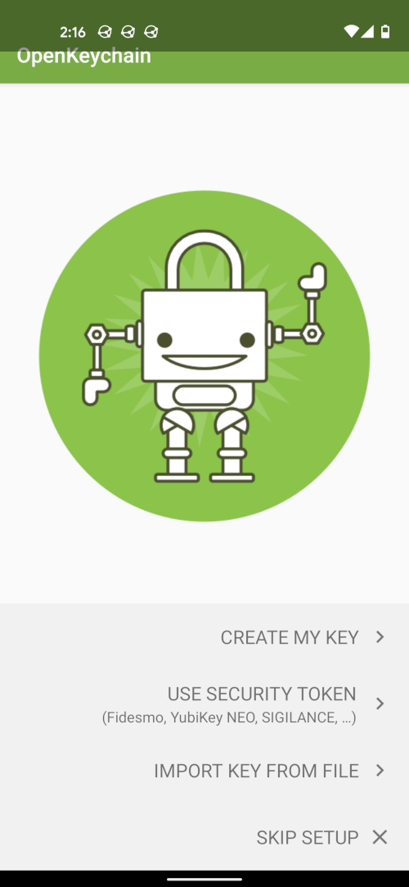
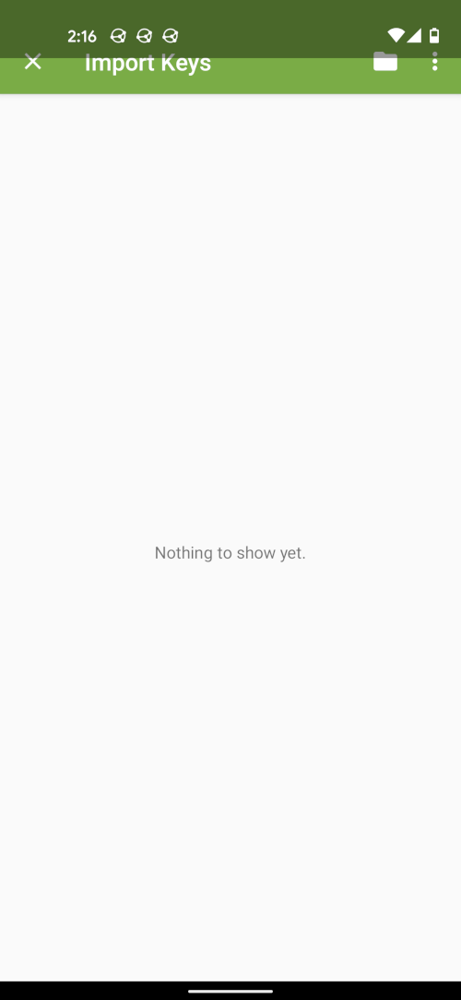
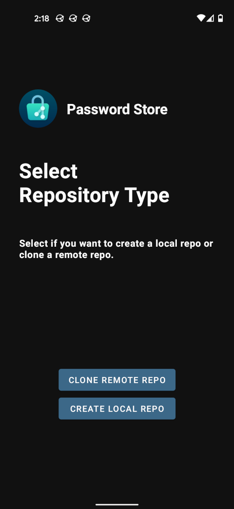

I recently started using a wonderfully simple password manager called pass. I wanted to check it out for a long time, but now I finally got some time and incentive to finally do so. Even though the web- and manpage are very helpful, I had to search quite a bit around to make it work between my phone and Laptop, so I wanted to streamline the process in this post. We will setup pass on an Arch Linux machine first and then sync our existing password store to a MacBook and an Android Phone. So without further ado let’s get started!
Installing pass
Installing pass should be as easy as:
your-package-manager install passfor example in Arch Linux it’s just:
sudo pacman -S passpass should be available in every major package manager.
Before we actually initiate the password store, we need a gpg key which is used to encrypt our passwords. To do this, we proceed as follows:
gpg --full-gen-keyAfterwards you get a couple of questions, which you can mostly answer with the defaults. The only exception I made, was to use the biggest keysize possible. Here is the full dialogue:
Please select what kind of key you want:
(1) RSA and RSA (default)
(2) DSA and Elgamal
(3) DSA (sign only)
(4) RSA (sign only)
(14) Existing key from card
(ins)Your selection? 1
RSA keys may be between 1024 and 4096 bits long.
(ins)What keysize do you want? (3072) 4096
Requested keysize is 4096 bits
Please specify how long the key should be valid.
0 = key does not expire
<n> = key expires in n days
<n>w = key expires in n weeks
<n>m = key expires in n months
<n>y = key expires in n years
(ins)Key is valid for? (0) 0
Key does not expire at all
(ins)Is this correct? (y/N) y
GnuPG needs to construct a user ID to identify your key.
(ins)Real name: Your Name
(ins)Email address: your.name@address.com
(ins)Comment:
You selected this USER-ID:
"Your Name <your.name@address.com>"
(ins)Change (N)ame, (C)omment, (E)mail or (O)kay/(Q)uit? OIf everything worked out fine, you should now see your gpg key with:
gpg --list-keysOutput:
/home/snow/.gnupg/pubring.kbx
--------------------------------
pub rsa4096 2021-04-11 [SC]
0abcE883def59ghi422Dsggo1226C853FF98C17
uid [ultimate] Marcel Patzwahl <my.name@address.com>
sub rsa4096 2021-04-11 [E]Now we are able to create our password-store with:
pass init 0abcE883def59ghi422Dsggo1226C853FF98C17Here we explicitly pass the gpg key id to pass (this post will probably contain a lot of these puns). This way it’s set as the default key and we don’t get asked about the gpg key each time we encrypt/decrypt a password. If you forget about passing the key id initially, you can also do this on an already existing password-store. Then the gpg key is just applied to the existing store.
Finally we want to activate git for our password-store:
pass git initNow our password-store is a git repository and every change will be a git commit (examples follow later). git will be our primary tool to sync pass between multiple devices and it actually works pretty well with the automatic commits pass does for us. But before we go into the synchronization, let’s get to know the basic usage of pass a little better.
Basic Usage of pass
Even though this isn’t an intro into the pass cli itself, we want to go through some examples just to get a feel for this tool.
Create an existing password
pass insert testThis command will ask you twice about an existing password. This password is
then stored as a file in the .password-store directory, which is encrypted via
our gpg key we created earlier.
We can also store our passwords in a directory tree structure if we split the names with a slash:
pass insert mail/test.comThis creates a mail directory in the .password-store directory and puts a
test.com file in it. This file again is encrypted with our gpg key.
Create a password with more metadata
Often we don’t want to only store a password, but also some additional
information like the username and the URL to which the password belongs. This
is also pretty straightforward. We just pass the -m flag for a multiline
password. Let’s try this by overriding the last password we added earlier:
pass insert -m mail/test.com
An entry already exists for mail/test.com. Overwrite it? [y/N] y
Enter contents of mail/test.com and press Ctrl+D when finished:
my-secret-password
url: https://test.com
username: snowFirst we accept to override the existing password and the we are able to write
multiple lines. The first line is always only the password, followed by an
arbitrary number of key: value pairs, splitted by a colon. When you are done
press CTRL+D to save and exit. As we will see later, these additional fields
can be used by different pass clients, to directly open a url or also insert the
username in a form of a website.
Generate a new password
You can also generate new passwords like this:
pass generate generated-passwordOutput:
The generated password for generated-password is:
6y<a\+57Eh&@L@@O6ax|MK";{You can also pass -n to the generate command to generate a password without
symbols and add a number after the name to set the length of the generated
password.
Showing and copying passwords
To show the test password we created earlier, you call:
pass show testor only:
pass testTo also copy the password into your clipboard you pass the -c flag.
Show all passwords in the password store
This is:
pass listor just:
passOutput:
Password Store
├── generated-password
├── mail
│ └── test.com
└── testAs you can see, this prints a nice tree of all the passwords we have created in this section.
pass git commands
pass is tightly integrated with git. You could already see this when executing one of the commands before. pass is always automatically creating a commit with a meaningful message for every operation we did. For example:
[master f71e270] Add generated password for generated-password.
1 file changed, 0 insertions(+), 0 deletions(-)Starting with pass git we are able to execute basically any git command on the
.password-store directory. We will use this knowledge to setup a remote repository for
our password store to be able to sync our passwords between different machines.
Closing words on pass usage
Even though we didn’t cover every possible pass command here, I hope you got a grasp of how easy and straightforward it is to interact with your passwords via the pass CLI. It also doesn’t get much harder from here. If you are searching for another functionality, you can view the pass man pages via:
man passThe manpage describes all the commands and arguments you can pass to them in a very intuitive fashion. You should also already know how pass works behind the curtain by now, just by interacting with it for a bit. It’s really just a minimal CLI tool, which leverages other unix technologies already present like gnupg (gpg), git and files. pass really deserves the name “the standard unix password manager” because it shows very nicely what the unix philosophy is all about.
In the coming sections we come to the actual core of this blog post: How do we manage our password-store on multiple devices? We start by creating a remote repository, which will act as our single source of truth with which all our clients will sync their passwords.
Sync the password store with a remote repository
First we need to decide where we want to host our remote repository. I decided to this on my Raspberry Pi. See this earlier blog post of mine, where I describe in detail, how to setup a Git Server with your Raspberry Pi
But you could even host your password store in a public GitHub repository if you like. People would see the structure of your password store, but wouldn’t be able to see the actual passwords, because they can’t encrypt them without your gpg key. However I prefer to keep it completely private, but however you decide, you just need the remote url of the repository to follow along.
When you have the remote url you can add it to your existing password store via:
pass git remote add origin git@address.com:snow/pass.gitAfterwards you should see the remote with:
pass git remote -vorigin git@address.com:snow/pass.git (fetch)
origin git@address.com:snow/pass.git (push)If it looks the same, but with your remote address, you are now able to push your current state to the remote:
pass git push origin masterNow that we have stored the password store to a remote repository, we can start cloning it onto our other devices. Let’s start with the MacBook.
Syncing to another Machine
Since Mac OSX and Linux both built onto Unix, the process is quite
similar. Just replace brew with your operating system’s package manager and you should
be good to go. You should have git access already configured on your second
machine, because this won’t be covered explicitly in this post.
First you need to export and transfer your existing GPG secret key to your new machine, because you want to be able to encrypt and decrypt passwords there as well. To get the secret key id we first list our secret keys:
gpg --list-secret-keysThen we take our key id and export it like this:
gpg --export-secret-key <your-secret-key-id> > secret.gpgNow we need to take the generated file secret.gpg and share it with our second
machine. This can be done in various ways, like copying it over via SSH. I
shared it via Syncthing with my other device.
When you have the secret key on your second device you can import it via:
gpg --import <path-to-file>A little side note: Always make sure you use gpg2, since pass is using gpg2 by
default. If you installed gpg via brew on Mac OSX, you use gpg2 by
default. The same goes for Arch Linux. But this is not the case for every distro
on earth. So make sure gpg and gpg2 both direct to gpg2. Otherwise you
could get into trouble doing things with pass, when gpg keys were created with
gpg one for example.
Now we want to list our secret keys again and see if it was imported successfully:
gpg --list-secret-keysIn the output you will see something like this in the uid row:
uid [ unknown] <Your UID>The unknown means, the key isn’t trusted yet. To trust the key fully, we need to do the following:
gpg --edit-key <your-key-id>Output:
gpg (GnuPG) 2.2.27; Copyright (C) 2021 Free Software Foundation, Inc.
This is free software: you are free to change and redistribute it.
There is NO WARRANTY, to the extent permitted by law.
Secret key is available.
sec rsa4096/...
created: 2021-04-07 expires: never usage: SC
trust: unknown validity: unknown
ssb rsa4096/...
created: 2021-04-07 expires: never usage: E
[ unknown] (1). ...
(ins)gpg>
In the GPG shell, which just opened just type and send trust, choose the
maximum trust level (5), save and afterwards you can quit. Here is the
complete dialogue:
(ins)gpg> trust
sec rsa4096/...
created: 2021-04-07 expires: never usage: SC
trust: unknown validity: unknown
ssb rsa4096/...
created: 2021-04-07 expires: never usage: E
[ unknown] (1). ...
Please decide how far you trust this user to correctly verify other users' keys
(by looking at passports, checking fingerprints from different sources, etc.)
1 = I don't know or won't say
2 = I do NOT trust
3 = I trust marginally
4 = I trust fully
5 = I trust ultimately
m = back to the main menu
(ins)Your decision? 5
(ins)Do you really want to set this key to ultimate trust? (y/N) y
sec rsa4096/...
created: 2021-04-07 expires: never usage: SC
trust: ultimate validity: unknown
ssb rsa4096/...
created: 2021-04-07 expires: never usage: E
[ unknown] (1). ...
Please note that the shown key validity is not necessarily correct
unless you restart the program.
(ins)gpg> quit
If you list your secret keys again, you should see the box [ultimate] in the
uid row instead of [unknown].
Next we install pass via:
brew install passand we clone the repository to the .password-store directory in our $HOME:
git clone git@address.com:/pass.git ~/.password-storeand we are done already. You can list your password store with pass, get one
of our earlier created passwords with pass test and so on, like it was on our
original machine.
Since we started with a git repository on our second machine right away, every change gets already committed automatically. Remember to push your changes to the remote when you modify your password store and pull again from your other devices. You can also automate the pushing and pulling by setting a CRON job that pushes and pulls e.g. once per hour. This works surprisingly well already, because normally you don’t work on all your devices in parallel. Even if you should run into merge conflicts, you can use git’s capabilities to either rebase onto the HEAD or do a merge commit and be in sync again.
Sync to a phone
To add new devices, you only need to setup these few steps:
- setup the gpg key
- clone your password-store repository
- install the pass cli
This is the same for setting up pass on a phone. However, how you do each step is slightly different. This is why we cover this explicitly as well now for the example of an Android Phone.
First step again is getting the secret key file, we created earlier on your phone. You can do this via USB file transfer or like I did it: with Syncthing.
Afterwards we need an app, which can deal with gpg keys. The app I use for this is called OpenKeychain. Download it from F-Droid or the Play Store and open it. You should see the following welcome screen:

Select OPEN KEY FROM FILE and click on the directory symbol on the newly opened dialogue to select the gpg key file:

Now your GPG key is also setup on your phone. Next we install the Password Store app and open it:
 title=“password-store opening screen” />
We select CLONE REMOTE REPO and give it the url of our remote repo and the way we want to authenticate. If you are normally using SSH Keys, you can choose SSH and either generate a new key and share it or import one you created before. By generating and sharing, you can share the public ssh key with the server you try to clone the git repository from and will immediately be able to sync with the repository.
After you cloned the repository, you need to allow the Password Store to access OpenKeychain and afterwards you are able to encrypt and decrypt passwords here as well.
A little tip at the end: if you swipe down on the password list inside of your Password Store app, it syncs with your remote repository and the state on your phone is up to date again.
Why Password Store?
Now that we have our multi setup completed we can now collect the fruits of our labor. One of pass’ biggest pros is: you have so many great integrations to use with your new password manager, it’s outstanding!
You can directly get passwords into your clipboard via different launchers like dmenu on linux or alfred on Mac OS. You already saw the Android App, which makes Password Store usage on phones a breeze. There is a browser integration for Firefox and Chrome. You can have different GUI apps, like you are used to from other password managers. If you set additional fields like URLs or your usernames, many of the tools can make use of them. For example the browser integrations know where to suggest what, based on the url field you’ve set and also offer username completion. There is a plugin for different editors like Emacs. You can extend pass with different additions to also support OTPs for example.
You are also able to integrate it with any scripts you write, because it’s just a neat little CLI tool. One example I use, is to get my mail password from pass for offlineimap to sync my mail with my machine. The way how to get the password can be scripted in python. There I just open an external process call to the pass CLI to retrieve the password. See my dotfiles for more details on how to do it.
Also when you use Emacs, you can make use of the built-in plugin
auth-source-pass, which automatically gets secrets from pass for things you
want to do within Emacs and need a password for, like sending mails, joining IRC,
login to GitHub to use Forge and so on.
With the default settings you are asked for your GPG password every time, but you can also cache it for a longer time. For this you need to set the following fields in the ~/.gnupg/gpg_agent.conf:
max-cache-ttl 86400
default-cache-ttl 86400The values are in seconds and in my case, cache the password for one day. You can find more infos on GPG in the arch wiki.
And the final plus is: you learn a bit about GPG itself during the process, which finds usage also in many other areas besides of pass. For example you can use your GPG key for other neat things like: signing releases/commits in git, sign or encrypt your mails and many things more.
I hope this post helped you getting rid of some initial difficulties with setting up pass on multiple devices. The bit of effort you spend on the initial setup is quite worth it, because pass is so simple and mainly makes use of already established technologies. This attribute makes it easily integrable into almost any process you need secrets for and makes the handling with passwords not only easy, but also secure.